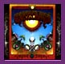

<html>
<head>
<title>The AOXOMOXOA song cycle</title>
</head>
<body>
<i>"...remnants of forgotten dreaming..."</i>
<a href="aoxomoxoa.jpg"></a>
<h3>The AOXOMOXOA Song Cycle</H3>
An essay for the <a href="gdhome.html">Annotated Grateful Dead Lyrics</a><br>
By <a href="david.html">David Dodd</a><br>
1997-98 Research Associate, Music Dept.<br>
University of California, Santa Cruz<br>
<font size=-1>(The opinions expressed are those of the author, not of the University of California.)<br></font>
<hr>
Of the two albums (the other is <cite><a href="discog2.html#workingman">Workingman's Dead</a></cite>) whose words are all by Robert Hunter,


<cite><a href="discog1.html#aoxomoxoa">AOXOMOXOA</a></cite> is perhaps the best realized as a set of interrelated


songs, whose texts shed light on each other, without ever


yielding up their meaning in any set way. The fact that Hunter


wrote


an explicit song cycle, "Eagle Mall," which was never set by the


Dead,


is evidence that he was thinking in an interconnected way about


his


lyrics at the time. (The "Eagle Mall" suite is interesting for


several


parallels in motif to the AOXOMOXOA songs: there is a reference


to 


the Mountains of the Moon in "Lay of the Ring," and in


"Invocation" there


is mention of an Eagle Palace.)<br>


The songs:


<ul>


<li><a href="stephen.html">Saint Stephen</a>


<li><a href="dupree.html">Dupree's Diamond Blues</a>


<li><a href="rosemary.html">Rosemary</a>


<li><a href="rag.html">Doin' That Rag</a>


<li><a href="moon.html">Mountains of the Moon</a>


<li><a href="china.html">China Cat Sunflower</a>


<li><a href="baby.html">What's Become of the Baby</a>


<li><a href="cosmic.html">Cosmic Charlie</a>


</ul>


<hr>


<b>AOXOMOXOA</b>:<br>


This just in from <cite>Skeleton Key</cite> co-author Steve Silberman:


<blockquote>


From digaman@well.sf.ca.usMon Apr  3 09:23:21 1995<br>


Date: Mon, 3 Apr 1995 07:30:27 -0700<br>


From: Steve Silberman <digaman@well.sf.ca.us><br>


To: ddodd@well.sf.ca.us<br>


Subject: Re: Aoxomoxoa<br>


<p>


This was posted in deadlit 232 this morning, David:


<p>


I was up at Hunter's yesterday, and he said that Rick Griffin called him


 up and asked him about a title for the record.  Hunter said he told


 Griffin, "Why don't you put a bunch of those palindromic things that


 you've been doing - 'oxo,' 'mom,' and the others - together?"


<p>Steve Silberman


</blockquote>


<p>


This nearly unpronouncable title was suggested by Robert Hunter (see note above) to 


<a href="http://www.san-fran.com/rockart/griffin/index.html">Rick Griffin</a>,


to fit in with his famous <a href="http://www.ecst.csuchico.edu/~nanci/Pdromes/index.html">palindrome</a> 


<a href="http://sonnet.com/webworld/sfsons.htm">album cover</a>. I have yet to


find much speculation on whether there might be any actual


"meaning" in the word. (And for that matter, how <i>is</i> it


pronounced, exactly?)<br>


But if we look at the elements of the "word," that is, take it


apart into its smaller pieces, we can speculate. Always a fun


thing to do with language. <br>


"AO" is the classic abbreviation for "Alpha and Omega," or the


beginning and the end. "X" might be interpreted as a number of


things: a mathematical symbol meaning "times" (which can also be


expressed as "of"; the classic Christian cross; or merely a


dividing symbol, meant to separated the "AO" from the "OM". "OM"


is a little too big to take on here, but it is the sound which,


in Hindu and Buddhist philosophy, contains all the other sounds


of the world. <cite><b>The Encyclopedia Britannica</cite></b> has


this to say about "Om"


<blockquote>


"...a sacred syllable that is considered to be the greatest of


all the mantras, or sacred formulas. The syllable <i>Om</i> is


composed of the three sounds <i>a-u-m</i> (in Sanskrit, the


vowels <i>a</i> and <i>u</i> coalesce to become <i>o</i>), which


represent several important triads: the three worlds of earth,


atmosphere, and heaven'; the three major Hindu gods..., and the


three sacred Vedic scriptures. ... Thus </i>Om</i> nystically


embodies the essence of the entire universe."


</blockquote>


There is a wonderful section in <a href="http://userwww.sfsu.edu/~rsauzier/Hesse.html">Hermann Hesse's</a>


<cite><b>Siddhartha</cite></b> on the "OM":


<blockquote>


"Siddhartha listened. He was now listening intently, completely


absorbed, 


quite empty, taking in everything. He felt that he had now


completely 


learned the art of listening. He had often heard all this before,


all these numerous 


voices in the river, but today they sounded different. He could


no longer


distinguish the different voices--the merry voice from the


weeping voice, the


childish voice from the manly voice. They all belonged to each


other: the lament of


those who yearn, the laughter of the wise, the cry of indignation


and the


groan of the dying. They were all interwoven and interlocked,


entwined in


a thousand ways. And all the voices, all the goals, all the


yearnings, all the sorrows, all


the pleasures, all the good and evil, all of them together was


the world. 


All of them together was the stream of events, the music of life.


When 


Siddhartha listened attentively to this river, to this song of a


thousand voices; when


he did not bind his soul to any one particular voice and absorb


it in his Self, but heard them


all, the whole, the unity; then the great song of a thousand


voices consisted of one word: Om--


perfection." (pp. 110-11)


</blockquote>


So this seemingly nonsensical word could, conceivably, mean "The


beginning and the end of everything."


<p>


<b>Cover symbolsim</b>:<br>


Griffin's cover is a concoction of symbols, which mainly tie


together in the birth to death cycle. A grinning skulll grasps


two eggs, while embryos, and seeds live under the ground, sending


up trees and lotus flowers. The sun image, looked at from a


slightly different angle, could be construed as an egg being


beset by sperm. The scarab which resides squarely in the middle


of the "M" at the bottom of the painting is, according to


<cite><b>The Encyclopedia Britannica</cite></b>: 


<blockquote>


"In ancient Egyptian religion, important symbol in the form of a


dung beetle. The Egyptians apparently believed that the beetle


laid its egg in the ball of dung, which it rolled to its burrow


and consumed; they saw in the life cycle of the beetle a


microcosm of the cyclical processes in nature, and particularly


of the daily rebirth of the sun. The scarab became a symbol of


the enduring human soul as well."


</blockquote>


According to the book about Griffin's art, <a


href="biblio.html#griffin"><cite>


Rick Griffin</cite></a>, "The images...on pieces from this San


Francisco


era did not have anything to do with his beliefs. They were


simply distinctive,


graphically intriguing symbols he found on currency or in old


engravings 


in public library books." (p.16)


<p>

And this note from a reader:

<blockquote>

Subject: aoxomoxoa<br>

Date: Wed, 12 Feb 1997 20:49:42 -0800<br>

From: Luke Meade <luke@kagan.com><br>

<p>

Re. the word "AOXOMOXOA":

<p>

X is a mathematical symbol meaning a lot more than "times" or "of"

--let's not forget our old variable friend, "X" the Unknown!

<p>

(reminds me of the old Firesign Theatre gag:  "This film has been rated

X, the Unknown.  Positively no one admitted.")

<p>

                                                L

</blockquote>

<hr>


<b>The Overall Theme</b>:<br>


The first and most obvious theme in the songs is that of the


child, or the infant. From the opening track, <a


href="stephen.html">"Saint Stephen"</a>, with its line "Wrap the


babe in scarlet colors," to the closing track, <a href="cosmic.html">"Cosmic Charlie,"</a>


with its "Go on home, your Mama's calling you," the album is


sprinkled with references to children, infants, babies, and


childhood itself. And, of course, there is the notably weird


song, <a href="baby.html">"What's Become of the Baby?"</a><br>


I believe that all these references, and the use of distinctly <a


href="goose.html">nursery-rhyme</a>-like lyrics in some of the


songs ("Is it all fall down, Is it all go under?"; "Heigh ho, the


carrion crow...") conspire to induce a vague sense in the


listener that the album is speaking directly to the experience of


childhood, and to the loss of childhood, whether by death or by


growing up. <br>


This is consistent with Griffin's cover and title.


<hr>


<b>Other motifs</b>


<ul>


<li>Cards:


(Especially <a href="http://www.universe.digex.net/~kimberg/pokermain.html">poker</a>.


<ul>


<li>"Dupree come out with a losing hand"


<li>"One-eyed jacks and the deuces are wild..."


<li>"Like a diamond-eye jack"


<li>Additionally, note the references to the Alice books, where


many of the


characters are cards.


</ul>


<li>Precious stones and gems


<ul>


<li>"<a href="#diamond">Diamond</a>-eye jack"


<li>"Shower of <a href="china.html#pearls">pearls</a>"


<li>"Panes of crystal"


<li>"Jade merchant's daughter"


<li>"a shiny, <a href="#diamond">diamond</a> ring"


<li>"offer jewels to the sunset"


</ul>


</ul>


These minor motifs lend a continuity to the songs which is not


quite describable.


 Admittedly, these motifs are all popular throughout Hunter's


lyrics, but their


presence here serves a special purpose.


<hr>


<a name="diamond"><b>Diamond</b></a><br>


<a href="biblio.html#cirlot">Cirlot</a> has this to say about the


symbolism of the diamond:


<blockquote>


"Eytmologically, it comes from the Sanskrit <i>dyu</i>, meaning


'luminous being.' It is a symbol of light and of brilliance. The


word 'adamantine' is connected with the Greek <i>adamas</i>,


meaning 'unconquerable.' In emblems, it often indicates the


irradiant, mystic 'Centre'. Like all precious stones, it partakes


of the general symbolism of treasures and riches, that is, moral


and intellectual knowledge." (p. 81)


</blockquote>





<hr>
A postscript sent in by a reader:
<blockquote>

From: IceFire813@aol.com [mailto:IceFire813@aol.com]<br>
Sent: Wednesday, July 23, 2003 9:33 PM<br>
<br>
I've been visiting your site for quite a while, actually, as long as I've been a fan of The Grateful Dead, and, as every e-mail that I've read on your site starts this way, I must say that it is absolutely amazing, and as a realtively new (I'm 16 years old and have been listening to The Grateful Dead for only around 2 years) Deadhead, it has been a great help in not only understanding the words in the songs, but what they were meant to convey.
<br>
Also, ever since I've visited your site, I've wanted to contribute something, and I think I may finally have  chance to. I'll send more about this later if I find out (more like when, because I know it'll botehr me until I do!), but I just found my dad's copy of Aoxomoxoa, and decided that I needed to know what it meant. Surprise, surprise, it's not a real word, so I typed it into a search engine, and the most common thing that showed up was kites. There was nothing about kites on your website, so I thought it might be helpful if I could send something in.
<br>
It (the word) seems to mean, or have been adopted to mean, or signify/represent, a sense of freedom and spiritual contentedness found through flying a kite. A small webpage explains it rather... poetically:<br>
<a href="http://www.reckites.com/aoxomoxoa/">http://www.reckites.com/aoxomoxoa/</a>
Also, pictures that attempt to convey the feeling of Aoxomoxoa can be found at:<br>
<a href="http://www.windwizard.com/oxo.html">http://www.windwizard.com/oxo.html</a>
<br>
I hope you can use this in your website, of course, please feel free to, that's why I took the time to type it up! Also, if anyone knows anything more about this, please e-mail me at: IceFire813@aol.com - thanks a lot!
<br>
~Dan

</blockquote>
<hr>
First posted: February, 1995<br>
Last revised: July 24, 2003
</body>
</html>